Technical Document
This document provides a detailed technical overview of the Inventory Management System (IMS).
It focuses on the internal working of the system, explaining how data flows, how it is structured, and how different components interact with each other to achieve system functionality.
Data Flow
Overview
The Data Flow Diagram (DFD) of the Inventory Management System (IMS) illustrates the logical movement of data among the primary entities, system processes, and the centralized database.
The flow begins with a User initiating authentication through the JWT-based Authentication Module, where login credentials are validated against stored user records. Upon successful verification, access privileges are assigned based on the user’s designated role.
- A Manager (Authenticated) can update product details, manage inventory levels, and view all recorded sales transactions for monitoring purposes.
- A Salesperson (Authenticated) can record new sales transactions and view their individual transaction history.
Both roles interact with system processes that communicate directly with the Database, which acts as the central data repository.
Data Flow Diagram

Flow Description
User Authentication
All users initiate interaction with the system through a secure login process. Upon submission of credentials, the Authentication Module verifies user details against the User Database. If valid, a JWT token is generated and issued to the client, allowing authenticated access to authorized system functions.
Manager’s Operations
After successful authentication, the Manager gains access to product and transaction management features.
They are permitted to:
- Update inventory, including adding, modifying, or deleting product details.
- View transaction records for oversight of sales activities.
All modifications performed by the manager are securely stored in the central Database, ensuring real-time data consistency.
Salesperson’s Operations
Once authenticated, the Salesperson can:
- Record sales transactions, selecting products and quantities from available stock.
- View their own transaction history, allowing transparency and tracking of sales activity.
Each transaction entry updates the Transactions and Products tables in the Database, reflecting accurate stock levels after every sale.
Database Interactions
The Database serves as the unified data repository for all system entities, including Users, Products, and Transactions.
Every process communicates with the database through secure API calls.
Data Modeling
The Data Model of the Inventory Management System (IMS) represents the logical organization of data across the system’s core entities.

Schema Description
1. USERS Table
The USERS table stores information about all registered system users, including Admins, Managers, and Salespersons.
It serves as the authentication backbone of the system and enforces role-based access through the role attribute.
| Field | Type | Description |
|---|---|---|
id |
int (PK) | Unique identifier for each user. |
username |
varchar | Login name used for authentication. |
role |
enum | Specifies user type — Admin, Manager, or Salesperson. |
password |
varchar | Encrypted password for secure authentication. |
first_name, last_name |
varchar | Personal details of the user. |
created_at, updated_at, deleted_at |
datetime | Track record lifecycle and soft deletion. |
Relationships:
- A user makes one or more transactions (
user_id→TRANSACTIONS.id). - A user’s permissions depend on their assigned role.
2. PRODUCTS Table
The PRODUCTS table manages all inventory-related data.
It stores product-specific attributes such as category, quantity, and price.
This table is primarily updated by Admins and Managers, ensuring inventory accuracy.
| Field | Type | Description |
|---|---|---|
id |
int (PK) | Unique product identifier. |
product_name |
varchar | Name of the product. |
category |
enum | Classification of the product (e.g., Electronics, Apparel, etc.). |
quantity |
int | Current stock count for the product. |
price |
numeric | Price per unit of the product. |
created_at, updated_at, deleted_at |
datetime | Audit timestamps for record management. |
Relationships:
- A product can appear in multiple transactions through the
TRANSACTION_PRODUCTStable. - Linked to
TRANSACTION_PRODUCTSviaproduct_id.
3. TRANSACTIONS Table
The TRANSACTIONS table records each sale or purchase event performed within the system.
Each transaction is linked to the user who initiated it and may contain multiple product entries.
| Field | Type | Description |
|---|---|---|
id |
int (PK) | Unique identifier for the transaction. |
transaction_type |
enum | Indicates whether the transaction is a Sale or Purchase. |
user_id |
int (FK) | References the user who performed the transaction. |
grand_total |
numeric | Total monetary value of the transaction. |
created_at, updated_at, deleted_at |
datetime | Lifecycle tracking of transaction records. |
Relationships:
- A transaction contains one or more product entries recorded in the
TRANSACTION_PRODUCTStable. - A transaction is made by a user (
user_idforeign key).
4. TRANSACTION_PRODUCTS Table
The TRANSACTION_PRODUCTS table acts as a junction table connecting TRANSACTIONS and PRODUCTS.
It maintains a record of all individual product entries associated with a specific transaction.
| Field | Type | Description |
|---|---|---|
id |
int (PK) | Unique identifier for the record. |
transaction_id |
int (FK) | References the transaction to which the product belongs. |
product_id |
int (FK) | References the product involved in the transaction. |
quantity |
int | Number of units of the product in this transaction. |
subtotal |
numeric | Total cost for the given quantity of that product. |
created_at, updated_at, deleted_at |
datetime | Record management and auditing fields. |
Relationships:
- Many-to-Many link between
TRANSACTIONSandPRODUCTS. - Each entry represents one product line item within a transaction.
3. System Architecture
This section presents the overall system architecture, describing the key components and how they interact.

Authentication
The Inventory Management System (IMS) uses JWT (JSON Web Token)–based authentication, implemented through the Django REST Framework Simple JWT library.
This enables stateless and secure communication between the client and server, ensuring controlled access for each authorized role — Admin, Manager, and Salesperson.
Authentication Process Overview
- A user (Admin, Manager, or Salesperson) enters their username and password on the login screen.
- The frontend sends these credentials to the backend authentication endpoint (
/api/auth/login/). - The backend validates the credentials against the Users table.
- If valid, the backend generates both an Access Token (short-lived) and a Refresh Token (long-lived) using Simple JWT.
- These tokens are returned to the frontend and securely stored in the local storage.
- When the access token expires, the frontend uses the refresh token at
/api/auth/refresh/to obtain a new one. - If credentials are invalid, the system responds with HTTP 401 Unauthorized.
This JWT-based flow ensures secure, stateless session handling and enforces role-based authorization, where each user can only access functionalities permitted for their role.
Authorization
Authorization in the Inventory Management System (IMS) ensures that only authenticated users can access specific system functionalities according to their assigned roles.
It enforces role-based access control (RBAC), maintaining data integrity, operational hierarchy, and system security.
After successful authentication, each user’s JWT token carries an embedded role claim (Admin, Manager, or Salesperson), which the backend verifies before granting access to protected resources or endpoints.
This mechanism ensures that every API request is validated against both the user’s identity and their authorized permissions.
Role-Based Access Overview
1. Admin
- Can:
- Add, edit, or delete products.
- Update inventory levels.
- Record purchase or sale transactions.
- View all transactions in the system.
- Manage user accounts.
- Cannot:
- Perform any action without valid authentication.
2. Manager
- Can:
- Add or delete products.
- Update inventory data.
- View and monitor all sales transactions performed by salespersons.
- Cannot:
- Access user management features.
- Record sales or purchase transactions directly.
3. Salesperson
- Can:
- View available products and quantities.
- Record new sales transactions.
- View their own transaction history.
- Cannot:
- Modify or delete products.
- Access transactions recorded by other users.
- Perform administrative or managerial tasks.
This structured authorization model ensures clear role separation, minimal privilege access, and secure control over business operations.
By combining JWT authentication with role-based authorization, the IMS maintains a secure and well-defined operational workflow across all system components.
Tech Stack
1. Frontend
| Component | Technology Used | Stable Version | Description |
|---|---|---|---|
| Markup & Styling | HTML5, CSS3 | Latest | Used to create a responsive and accessible user interface. |
| Scripting | JavaScript | ES6+ | Handles API integration, form validation, and user interactions. |
| Design Framework | Bootstrap | 5.x | Optional use for layout, grid, and responsive design. |
| PWA Support | Web App Manifest, Service Worker | — | Enables offline functionality and mobile compatibility. |
2. Backend
| Component | Technology Used | Stable Version | Description |
|---|---|---|---|
| Framework | Django REST Framework (DRF) | 3.16 | Handles APIs, authentication, and business logic. |
| Language | Python | 3.13.7 | Backend development language for logic and integration. |
| Authentication | Simple JWT (DRF) | 5.5.1 | Provides stateless user authentication via JWT tokens. |
| Database | PostgreSQL | 16 | Stores structured data with relational integrity. |
| ORM | Django ORM | Included | Simplifies database queries and migrations. |
3. Tools & Technologies
| Component | Technology Used | Stable Version | Description |
|---|---|---|---|
| Version Control | Git + GitHub | Latest | Used for source code management and collaboration. |
| CI/CD Pipeline | GitHub Actions | Latest | Automates build, testing, and deployment workflows. |
| Package Management | pip | 25.2 | Handles dependency installation and environment management. |
| IDE / Code Editor | VS Code | Latest | Development environment for writing and debugging code. |
| API Testing Tool | Postman | Latest | Used for testing, validating, and documenting RESTful APIs. |
| Backend Testing Framework | Pytest | 8.3 | Framework for unit, integration, and functional testing of Django backend. |
| Frontend Testing Framework | Jest | 29.7 | JavaScript testing framework used for testing UI components and frontend logic. |